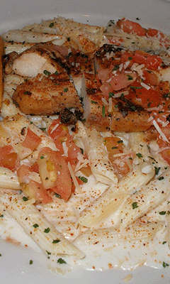

chili's cajun chicken pasta
by Julep67 is licensed under CC BY-NC-ND 2.0.
If you are looking for an easy healthy recipe, look no further. This pasta dish is easy to make and will make a great meal prep for those in a hurry.
Ingredients
- 1 Box Barilla Protein Pasta
- 1 lb Chicken Breast (diced)
- 1/2 Cup Shredded Parmesan
- 3 Tbsp Olive Oil
- 1/4 Cup Milk
- 15 OZ can Roasted Tomatoes
- 1 Bunch Asparagus
- 1/2 Medium Yellow Onion
- 2 Tbsp Cajun Seasoning
- 1/4 tsp Smoked Paprika
- 1 1/2 Cup Greek Yogurt
Preparation
- Prep Asparagus, cut white ends, boil for a few minutes, place in a large bowl.
- Add Chicken in mixing bowl with 1 Tbsp of olive oil and 1 Tbsp of Cajun Seasoning. Mix
- Place in skillet over medium high heat. Throw in medium chopped onion.
- Boil pasta.
- Start on sauce
- Add 1 1/2 Cup Greek Yogurt.
- Add 2 Tbsp Olive Oil
- Add 1 Tbsp Cajun Seasoning
- Add 1/4 tsp Smoked Paprika
- Mix and add 1/4 Cup Milk
- Add everything in a large mixing bowl and portion it out into 6 containers.